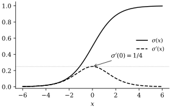

1 Calculus
1.1 Derivatives and the chain rule
Training a neural network means minimising a scalar loss over many parameters, and every practical method for that minimisation needs derivatives. This block fixes the basic notions for functions of one real variable; Section 2.1 extends them to several variables.
Definition 1.1 (Derivative) Let \(I \subseteq \mathbb{R}\) be an open interval and \(f\colon I \to \mathbb{R}\). The function \(f\) is differentiable at \(a \in I\) if the limit \[ f'(a) = \lim_{h \to 0} \frac{f(a+h) - f(a)}{h} \tag{1.1}\] exists; the number \(f'(a)\) is the derivative of \(f\) at \(a\).
Equivalently, \(f(a+h) = f(a) + f'(a)\,h + r(h)\) with \(r(h)/h \to 0\) as \(h \to 0\): near \(a\) the function is approximated by an affine map whose slope is the derivative. This first-order view is the one that generalises to many variables and to automatic differentiation.
Theorem 1.1 (Chain rule) Let \(I, J \subseteq \mathbb{R}\) be open intervals, let \(g\colon I \to J\) be differentiable at \(a\) and let \(f\colon J \to \mathbb{R}\) be differentiable at \(g(a)\). Then \(f \circ g\) is differentiable at \(a\) and \[ (f\circ g)'(a) = f'\big(g(a)\big)\, g'(a). \tag{1.2}\]
Proof. Define \(\varphi(y) = \big(f(y) - f(g(a))\big)/\big(y - g(a)\big)\) for \(y \neq g(a)\) and \(\varphi(g(a)) = f'(g(a))\). Differentiability of \(f\) at \(g(a)\) means that \(\varphi\) is continuous at \(g(a)\), and \(f(y) - f(g(a)) = \varphi(y)\,\big(y - g(a)\big)\) holds for every \(y \in J\). Substituting \(y = g(a+h)\) gives \[ \frac{f(g(a+h)) - f(g(a))}{h} = \varphi\big(g(a+h)\big)\,\frac{g(a+h) - g(a)}{h}. \] As \(h \to 0\) we have \(g(a+h) \to g(a)\) because \(g\) is continuous at \(a\), so the first factor tends to \(f'(g(a))\) and the second to \(g'(a)\).
The auxiliary function \(\varphi\) avoids dividing by \(g(a+h) - g(a)\), which can vanish for arbitrarily small \(h \neq 0\); this is the gap in the tempting argument that simply cancels \(\Delta g\).
Example 1.1 (Logistic sigmoid) The logistic sigmoid \(\sigma(x) = 1/(1 + e^{-x})\) maps \(\mathbb{R}\) onto \((0,1)\) and is a classical activation function. Writing \(\sigma = f \circ g\) with \(g(x) = 1 + e^{-x}\) and \(f(u) = u^{-1}\), the chain rule gives \(\sigma'(x) = -g(x)^{-2}\cdot(-e^{-x})\), which simplifies to \[ \sigma'(x) = \sigma(x)\,\big(1 - \sigma(x)\big). \tag{1.3}\] Hence \(0 < \sigma'(x) \le \sigma'(0) = 1/4\) for all \(x\); see Figure 1.1. Since the bound is attained only at the origin, a product of many such factors becomes small, which is one reason why deep networks of sigmoid units are hard to train with gradient methods (Goodfellow et al. 2017).

Exercise 1.1 Show that \(\tanh(x) = 2\sigma(2x) - 1\) and deduce \(\tanh'(x) = 1 - \tanh^2(x)\) from Equation 1.3 and Theorem 1.1.